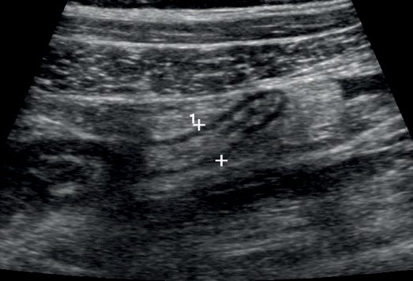
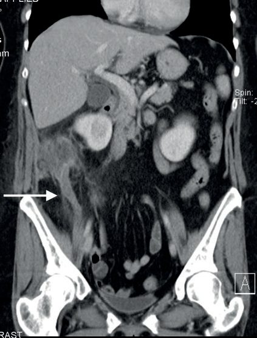
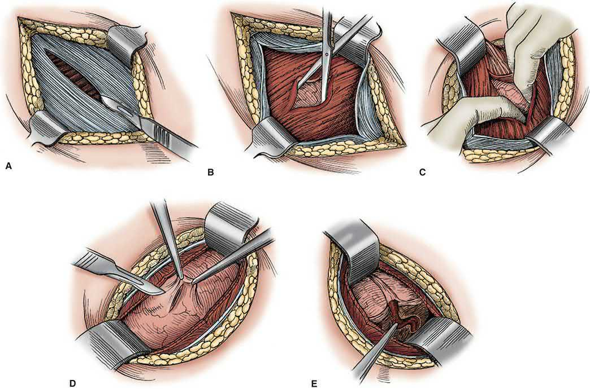

Pediatric Appendicitis
Summary
- Appendicitis in children most commonly affects those aged 10–19 years, with an overall incidence of approximately 20 cases per 10,000 person-years, and by age 20 about 4% of children and adolescents will have undergone appendectomy [1].
- It is a leading surgical cause of the pediatric acute abdomen from age 5 upward [2], but diagnosis is often delayed in young children because of atypical presentation and diagnostic mimics, leading to disproportionately high perforation rates in infants and toddlers [1].
- Management follows the same principles as adult appendicitis, fluid resuscitation, antibiotics, and appendectomy (increasingly laparoscopic), with nonoperative antibiotic-only management emerging as an option for selected uncomplicated cases [1][3].
Definition
Acute appendicitis is inflammation of the vermiform appendix; in children it is discussed as a "special consideration" population within the general acute appendicitis literature because of differences in incidence, presentation, and diagnostic accuracy compared with adults [1].
Pathophysiology
- The pathophysiology of appendicitis is commonly believed to follow this sequence: (1) closed-loop obstruction caused by a fecalith or other nidus (calculus, neoplasm, or lymphoid swelling) leads to swelling of mucosal and submucosal lymphoid tissue at the appendiceal base; (2) intraluminal pressure increases as the mucosa secretes fluid against the fixed obstruction; (3) wall pressure exceeds capillary pressure, causing mucosal ischemia; and (4) luminal bacterial overgrowth and bacterial translocation across the appendiceal wall cause inflammation, edema, ischemia, and ultimately necrosis, with perforation if the appendix is not removed [1].
- However, some evidence suggests obstruction may be only one of several mechanisms, as some patients with a fecalith have a histologically normal appendix and most appendicitis patients show no fecalith on imaging [1].
- In children, lymphoid hyperplasia (enlarged/inflamed Peyer's patches) is the most common cause of luminal obstruction, and can follow a viral illness, in contrast to a fecalith, which is the most common cause in adults [4].
- Luminal obstruction is followed by distention of the appendix, venous congestion and thrombosis, ischemia, gangrene, necrosis, and finally rupture [4].
- The midpoint of the antimesenteric border is the area most likely to perforate [4].
Clinical features
- Pain classically begins as vague, colicky central abdominal pain (referred pain via the tenth thoracic visceral innervation) before localizing to the right iliac fossa as the parietal peritoneum becomes involved; this pattern is almost diagnostic but occurs in only about half of patients [5].
- Anorexia typically comes first, followed by abdominal (periumbilical) pain, then vomiting, with pain gradually migrating to the right lower quadrant as peritonitis develops [4].
- Diarrhoea may be a delayed symptom and, especially in children, can lead to a mistaken diagnosis of gastroenteritis [5].
- Atypical presentations are common in the very young (as well as in pregnant women and the very old) [5].
- Right-sided basal pneumonia can occasionally mimic appendicitis, especially in children [5].
- Palpable neck lymph glands and enlarged tonsils suggest mesenteric adenitis rather than appendicitis, though appendicitis itself often follows a viral infection [5].
- In early appendicitis there is a fever of 37.3–38.4°C, anorexia, a few episodes of vomiting, and central abdominal pain settling in the right iliac fossa; persistent guarding in the right iliac fossa distinguishes it from self-resolving non-specific abdominal pain [3].
- Children often have higher fever and more vomiting and diarrhea than adults, and appendicitis is infrequent in infants but carries a higher propensity to rupture, largely because of delayed diagnosis [4].
- Among infants age 0–4, up to two-thirds present with perforation, disproportionately common because infants present later due to the difficulty of obtaining an accurate history [1].
Etiology
- Appendicitis in the pediatric population most commonly afflicts children aged 10 to 19 years, with an overall incidence of approximately 20 cases per 10,000 person-years; by age 20, approximately 4% of children and adolescents will have undergone an appendectomy [1].
- Among those younger than 20, infants aged 0–4 have the lowest incidence of appendicitis (2 cases per 10,000 person-years) [1].
- By age group, appendicitis becomes one of the leading causes of abdominal pain from ages 5–12 and remains a leading cause above age 12, whereas it is not among the top listed causes from birth to age 5 [2].
- Appendicitis is uncommon under age 4 [6].
Diagnosis
- The diagnosis in children is complicated by diseases of childhood that mimic appendicitis, including mesenteric adenitis (inflammation of mesenteric lymph nodes presenting with fever and RLQ pain), streptococcal pharyngitis, bacterial meningitis, ovarian cysts, ovarian torsion, urinary tract infection, pelvic inflammatory disease, and complications of a Meckel diverticulum [1].
- Non-specific abdominal pain (including mesenteric adenitis), Meckel's diverticulitis, and ovarian cyst/menstrual symptoms in peri-menarchal girls are noted as key differential diagnoses in children [6].
- For children with an equivocal history, examination, and labs, ultrasound is the preferred initial imaging study, as it avoids ionizing radiation and does not require contrast or sedation, although it is operator dependent; a meta-analysis of over 7000 patients found pooled sensitivity of 88% and specificity of 94% for sonographic diagnosis of appendicitis in children, though sensitivity fell as BMI increased (76% for BMI <25 vs. 37% for BMI >25 in one study) [1].
- When ultrasound is indeterminate, MRI is preferred as second-line cross-sectional imaging in children able to tolerate the study, given equivalent or better sensitivity/specificity to CT without ionizing radiation (one series reported 97% sensitivity and specificity, with median imaging time of 11 minutes); CT remains widely available and rapid but carries a small theoretical increase in lifetime cancer risk from radiation in childhood (estimated 0.18% for a 1-year-old and 0.11% for a 15-year-old after a CT scan; a large study found one excess leukemia and one excess brain tumor per 10,000 head CTs) [1].
- Efforts to standardize care, incorporating labs and ultrasound findings, have reduced CT utilization from 21% to 4% without changing the negative appendectomy rate [1].
- Investigations and scoring systems may help distinguish appendicitis from non-specific abdominal pain, but neither replaces regular clinical review [3].
- CT diagnostic criteria in general include an appendiceal diameter greater than 7 mm or wall thickness greater than 2 mm (a "bull's eye" appearance), fat stranding, and absence of contrast in the appendiceal lumen [4].
- Patients can have a normal WBC count despite appendicitis [4].


Treatment and Management
- Treatment starts with intravenous fluids, analgesia, and broad-spectrum antibiotics; early appendicitis in children is managed laparoscopically, though some mild cases may resolve with antibiotics alone [3].
- Early data suggest feasibility of nonoperative management (NOM) with intravenous antibiotics among children with acute appendicitis: in a prospective, nonrandomized cohort study of 102 children aged 7–17 years with suspected uncomplicated acute appendicitis offered a choice of NOM or appendectomy, the 1-year failure rate of NOM (rate of appendectomy) was 24%, with potential benefits of NOM including fewer disability days and lower healthcare costs at 1 year, despite a longer initial hospital stay [1].
- Laparoscopic (or open) appendectomy for uncomplicated acute appendicitis remains a safe procedure with very low complication rates, and NOM carries recurrence rates that can be as high as 35% overall (27% in the APPAC trial, exceeding a predefined acceptability threshold) [1].
- Patients with evidence of an appendicolith on imaging should not undergo NOM given its association with complicated appendicitis [1].
- Nonoperative situations where the CT scan shows a walled-off perforated appendix are managed with percutaneous drainage and interval appendectomy at a later date as long as symptoms are improving [4].
NICE NG143 · NICE NG125
- NICE has published no guideline on appendicitis, in children or adults, and that absence is itself the first thing to know about the UK pathway.
- A search of the NICE guidance corpus returns no clinical guideline, technology appraisal or HealthTech guidance on the diagnosis or management of acute appendicitis; the condition appears only inside guidance on other subjects.
- UK practice is therefore set by surgical association guidance and local protocol, and the NICE documents that do bear on a child with suspected appendicitis are the ones about the unwell child and about contaminated surgery
- The traffic light system is the UK instrument for deciding how sick a febrile child is, and it applies before any diagnosis is made.
- Assess children with feverish illness for symptoms and signs predicting the risk of serious illness using the traffic light system, and direct management by the level of risk: any red feature means high risk; any amber feature with no red means intermediate risk; green features only means low risk [9].
- The circulation and hydration row is the one that matters most in a child with peritonitis [9]:
| Domain | Amber, intermediate risk | Red, high risk |
|---|---|---|
| Colour | Pallor reported by parent or carer | Pale, mottled, ashen or blue |
| Activity | Not responding normally to social cues, no smile, wakes only with prolonged stimulation, decreased activity | No response to social cues, appears ill to a healthcare professional, does not wake or if roused does not stay awake, weak, high-pitched or continuous cry |
| Respiratory | Nasal flaring; tachypnoea >50/min at 6 to 12 months or >40/min over 12 months; oxygen saturation ≤95% in air; crackles | Grunting; tachypnoea >60/min; moderate or severe chest indrawing |
| Circulation and hydration | Tachycardia >160/min under 12 months, >150/min at 12 to 24 months, >140/min at 2 to 5 years; capillary refill ≥3 seconds; dry mucous membranes; poor feeding in infants; reduced urine output | Reduced skin turgor |
| Other | Age 3 to 6 months with temperature ≥39°C; fever ≥5 days; rigors; swelling of a limb or joint; non-weight bearing or not using an extremity | Age under 3 months with temperature ≥38°C; non-blanching rash; bulging fontanelle; neck stiffness; status epilepticus; focal neurological signs or seizures |
Table reformats the NG143 traffic light system [9]. NICE adds that the table should be interpreted with the individual child's learning disability taken into account where one is present [9].
- On the operation itself, the applicable NICE guidance is the surgical site infection guideline, and appendicectomy sits in the categories that require prophylaxis.
- Antibiotic prophylaxis is given before clean-contaminated and contaminated surgery, and antibiotic treatment in addition to prophylaxis is given to patients having surgery on a dirty or infected wound, which is where a perforated appendix falls [10].
- For the paediatric patient specifically, NG125 singles out one closure material: consider using antimicrobial triclosan-coated sutures, especially for paediatric surgery, to reduce the risk of surgical site infection [10].
Surgeries
- Early appendicitis is managed laparoscopically in children [3].
- If, at operation for suspected appendicitis, no evidence of appendicitis is found, a thorough exploration of the peritoneum must be performed to identify an alternative cause [11].
- If presumed appendicitis instead reveals a ruptured ovarian cyst, thrombosed ovarian vein, or regional enteritis not involving the cecum, appendectomy should still be performed to prevent future diagnostic confusion [4].

Complications
- Perforation is disproportionately common in young children: up to two-thirds of infants aged 0–4 with appendicitis present with perforation, attributed to delayed presentation from the difficulty of obtaining an accurate history in this age group [1].
- Children and elderly patients have a higher propensity to rupture secondary to delayed diagnosis [4].
- A perforated patient is generally more ill and can show evidence of sepsis [4].
References
- Maingot's Abdominal Operations, 13th ed., Ch. 41 Appendix and Small Bowel Diverticula
- Sabiston Textbook of Surgery, 22nd ed., Ch. 85 The Acute Abdomen, Table 85.2
- Bailey & Love's Short Practice of Surgery, 28th ed., Ch. 17 Paediatric surgery
- The ABSITE Review, 2022, Ch. 35 Small Bowel
- Browse's Introduction to the Symptoms and Signs of Surgical Disease, 6th ed., Ch. 15 Acute lower abdominal pain
- Oxford Handbook of Clinical Surgery, 5th ed., Ch. 26 Emergency surgery topics
- Bailey & Love's Short Practice of Surgery, 28th ed., Ch. 76
- Bailey & Love's Short Practice of Surgery, 28th ed., Ch. 8
- NICE Guideline NG143: Fever in under 5s: assessment and initial management. National Institute for Health and Care Excellence, London, UK, 2019, updated 2021., 1.2.3; 1.2.4; Table 2 www.nice.org.uk
- NICE Guideline NG125: Surgical site infections: prevention and treatment. National Institute for Health and Care Excellence, London, UK, 2019, updated 2020., 1.2.12; 1.2.17; 1.3.20 www.nice.org.uk
- Schwartz's Principles of Surgery: ABSITE and Board Review, Ch. 30 Appendix
- Maingot's Abdominal Operations, 13th ed., Ch. 10